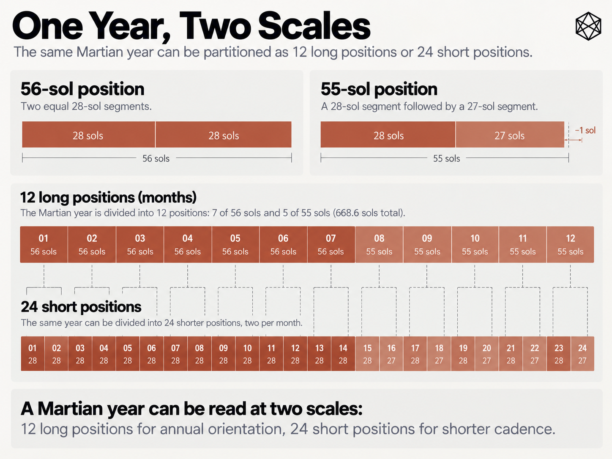
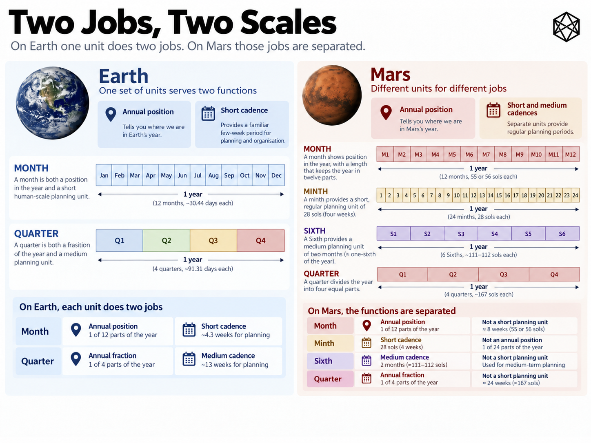

STRUCTURE
11) Two Jobs, Two Scales
Months, Minths, Sixths and Quarters
The last chapter showed Marian as a composition of overlapping civil scales. The question now is why those extra scales exist in the first place.
This is where Functional Separation becomes concrete. Earth's month performs two useful jobs: it provides annual position while also sitting close to a four-week operating interval. Earth's quarter does something similar: it is one fourth of the year and, at roughly thirteen weeks, a useful medium-range cadence. Mars separates both pairs.
Preserve twelve months and each becomes almost eight weeks long. Preserve something close to a four-week month and the year needs roughly twenty-four of them. Preserve a true quarter and it lasts almost twenty-four weeks rather than thirteen. One response would be to decide which terrestrial meaning survives. Marian does something else: it separates the meanings.
That is why the calendar contains twenty-four minths, twelve months, six Sixths and four quarters. Mars does not physically require all these layers. They exist because several useful functions that Earth happens to bundle together fall at different scales on Mars.
Month and minth: orientation versus cadence
Marian retains twelve months because twelve remains a useful way to understand an annual cycle. In a common year the month pattern is:
56 – 56 – 55 | 56 – 56 – 55 | 56 – 56 – 55 | 56 – 56 – 55
Each month is therefore approximately one twelfth of the Martian year. Its main job is annual orientation.
Month 1 places us at the opening of the annual cycle. Month 3 closes the first quarter. Month 6 ends the first half. Month 9 reaches three quarters. Month 12 brings the year to its conclusion. Those relationships are immediately intelligible because twelve divides cleanly by two, three, four and six.
The cost is duration. A Marian month contains 55 or 56 sols — roughly eight nominal week positions and close to twice the elapsed duration of an Earth month. Marian does not pretend otherwise. A Martian month is not meant to preserve everything the terrestrial word month currently implies. It preserves one particularly useful property: its place within a twelve-part year.
The shorter operating function goes somewhere else. That unit is the minth.
Every Marian month contains exactly two minths, giving twenty-four across the year. A 56-sol month divides as:
28 + 28 = 56 sols

Detailed figure description
A horizontal red diagram splits an ordinary 56-sol Marian month into two equal 28-sol minths; a second panel splits a short 55-sol month into a 28-sol first minth and a 27-sol second minth. Below, successive month-sized and minth-sized blocks show twelve annual positions alongside twenty-four shorter operating positions. The key distinction is annual orientation versus recurring short cadence.
Editorial note: this is a descriptive summary, not an independently verified transcription of every diagram label. Refer to the surrounding text and the Marian technical specification for authoritative numeric details where applicable.
A 55-sol month divides as:
28 + 27 = 55 sols
The first minth in every month therefore contains 28 sols. The second contains 28 or 27 depending on the month. A common year contains:
20 × 28 + 4 × 27 = 668 sols
The shorter 27-sol minths occur at the ends of Months 3, 6, 9 and 12.
Functionally, a minth is an approximately four-week operating period. A future Martian organisation might use minths for maintenance programmes, billing cycles, reviews, educational modules or project checkpoints. The calendar does not prescribe any of those practices; it merely provides a standard interval at a scale where such activities may remain useful.
That distinction matters. Marian is not saying that every process called “monthly” on Earth should automatically become minthly on Mars. It is saying that if a roughly four-week recurring interval remains useful, the civil calendar should provide one rather than stretching that function to 55 or 56 sols simply because Earth happened to attach it to the word month.
This is the first application of Functional Separation: the month keeps annual position; the minth keeps shorter cadence. Both describe the same physical sols, but they answer different questions. The month asks where are we in the year? The minth asks when does the next short operating period end?
On Earth, we can often answer both with July. On Mars, that convenience disappears. The useful response is not necessarily to decide which function deserves the word month, but to stop insisting that one unit must perform both.
That is why Marian's twenty-four-period layer is not merely an informal subdivision of the months. Minths have their own defined identities. There are always twenty-four, with canonical machine identities 01 through 24, A–X available as compact human shorthand, and optional natural-language names above that structural layer.
The naming details come later. The structural point is that a minth is a formal civil period, not merely “the first half of Month 7”. That matters if institutions are to coordinate around it: a numbered or named period can be addressed consistently by software, contracts, schedules and archives without every organisation inventing its own definition.
The reverse is also true. A month is not merely two minths glued together. Twenty-four short periods provide useful cadence, but they give a more crowded map of the annual cycle. Twelve larger positions make the shape of the year easier to see and preserve relationships such as three months to a quarter and six months to half a year.
The minth gives cadence. The month gives orientation. Neither becomes redundant merely because one nests neatly inside the other.
A map can contain both streets and districts.
Quarter and Sixth: the same problem again
The same terrestrial coincidence breaks one level higher.
On Earth, a quarter means two things at once. It is exactly one fourth of the year, and it is also approximately thirteen weeks, which happens to be a convenient medium-range operating horizon.
Mars separates those properties just as it separates the two meanings of month. A Marian quarter is roughly 167 sols — close to twenty-four nominal week positions. That is a perfectly good quarter. It is also a very long operating cycle.
Marian therefore repeats the same design logic. The quarter keeps the annual fraction; the Sixth takes the shorter medium-range role.
In a common year, Marian has four quarters of exactly 167 sols:
Quarter 1 — Months 1–3
Quarter 2 — Months 4–6
Quarter 3 — Months 7–9
Quarter 4 — Months 10–12
The arithmetic is deliberately unexciting:
56 + 56 + 55 = 167 sols
Repeated four times:
4 × 167 = 668 sols
There is considerable value in boring arithmetic when an entire civil system may eventually depend upon it.
The quarter therefore means exactly what its name suggests. It tells us which fourth of the Martian year we are in. Q1 means the first quarter, Q2 the second, and halfway through Q3 means roughly five-eighths of the annual cycle has elapsed. Those relationships remain valid whether future Martian companies issue quarterly earnings, schools use quarter terms or ordinary residents ever utter the word before breakfast.
In a leap year, Quarter 4 contains 168 rather than 167 sols because the additional sol occurs at the end of Month 12. The first three quarters are unchanged. The fraction remains the important idea; the familiar thirteen-week duration does not.
That creates the need for another middle scale. A Sixth contains two months, so there are six in each year and each contains four minths. In a common year their lengths are:
112 – 111 – 111 – 112 – 111 – 111 sols
Structurally:
Sixth 1 — Months 1–2
Sixth 2 — Months 3–4
Sixth 3 — Months 5–6
Sixth 4 — Months 7–8
Sixth 5 — Months 9–10
Sixth 6 — Months 11–12
Each represents sixteen nominal week positions, placing the Sixth between the 55/56-sol month and the 167-sol quarter.
It is still somewhat longer than an Earth quarter in elapsed time. Marian is not claiming that a Sixth is simply a Martian translation of Q1 or Q2. The resemblance is functional rather than numerical.
Earth's quarter performs a useful medium-range planning role because thirteen weeks happens to be one fourth of Earth's year. On Mars, one fourth of the year is too long to preserve that same operating character, so Marian makes another standard interval available.
The second application of Functional Separation is therefore parallel to the first: the quarter keeps annual fractionation; the Sixth provides medium-range cadence.
Whether future institutions use Sixths heavily remains an open human question. They might become common in government, engineering and finance, remain specialist vocabulary, or prove less valuable than the architecture anticipates. The calendar does not need to predict that outcome. It only needs to make the interval available in a clean and standard form.

Detailed figure description
Two adjacent panels contrast the different roles of calendar scales on Earth and Mars. The left shows how an Earth month and quarter perform both annual-position and cadence functions. The right shows Marian distributing those jobs among months and minths, and among quarters and Sixths. This is a functional design comparison, not a numerical claim that the units have equal durations across planets.
Editorial note: this is a descriptive summary, not an independently verified transcription of every diagram label. Refer to the surrounding text and the Marian technical specification for authoritative numeric details where applicable.
Why a Sixth?
The Sixth is probably the least immediately familiar unit in Marian, so it deserves a little justification. It is not an arbitrary 100-sol management cycle bolted onto the calendar because sixteen weeks sounded useful. It emerges naturally from the twelve-month structure.
One Sixth is:
2 months = 4 minths = 16 nominal week positions
One quarter is:
3 months = 6 minths = 24 nominal week positions
The whole year is:
12 months = 24 minths = 96 nominal week positions
That gives Marian a useful set of civil horizons:
| Scale | Typical structure | Primary role |
|---|---|---|
| Week | 7 weekday positions | Short recurring rhythm |
| Minth | 4 week positions | Short operating cadence |
| Month | 8 week positions | Annual orientation |
| Sixth | 16 week positions | Medium-range cadence |
| Quarter | 24 week positions | One fourth of year |
| Year | 96 week positions | Full annual frame |
The sequence is not intended to be mathematically perfect. Its value is that each interval arises from the same annual structure rather than being invented independently. A Sixth is visible in the calendar: two months, four minths, six per year. That makes it easy to place relative to everything around it.
It also avoids a common temptation in civil-time design: solving every coordination problem with an organisation-specific cycle that nobody outside that organisation understands. Mars will certainly still have specialist schedules. Hospitals may use particular shift patterns, universities their own terms, and engineering systems may require maintenance every 300 operating hours rather than every minth or Sixth.
Standard civil intervals do not replace those specialist cycles. They give them shared reference points.
Overlap follows from function
Chapter 9 showed why quarters and Sixths overlap rather than nesting perfectly. Here the important point is what that overlap tells us about their functions.
A quarter answers how far through the year are we? A Sixth answers which medium-range operating interval are we in? Those are different questions, so there is no requirement for every boundary to coincide. Sometimes they do; sometimes a Sixth crosses from one quarter into the next.
Human institutions already use overlapping temporal structures constantly. Weeks cross months. Fiscal years can start partway through calendar years. Academic terms rarely align perfectly with quarters. Payroll cycles may ignore month boundaries altogether. The demand that every civil unit nest perfectly inside the next is psychologically attractive, but it is not how temporal organisation actually works.
In Marian, the overlap is therefore a consequence of Functional Separation rather than an architectural curiosity. Once different scales are given different jobs, their boundaries need coincide only where the underlying arithmetic happens to make that useful.
The irregularity gets smaller as the horizon grows
Another useful property follows from the way Marian distributes its shorter periods. Minths vary between 27 and 28 sols, months between 55 and 56, and Sixths between 111 and 112. Common-year quarters do not vary at all: each contains exactly 167 sols.
The short units therefore absorb most of the local irregularity while the larger annual structure becomes progressively more stable. That is not accidental.
Months 3, 6, 9 and 12 are the shortened 55-sol months, so each common-year quarter contains exactly the same pattern:
56 – 56 – 55
The one-sol differences therefore resolve into four equal 167-sol quarters. Sixths vary slightly because two-month pairings cut across that three-month rhythm, but only by one sol.
This gives the architecture a particular character. It does not try to make every civil period identical. It makes variation small, repeated and predictable, while preserving greater regularity at the longer horizons where annual comparison matters more.
Under the Marian brief, that is preferable to concentrating several sols of adjustment into one highly exceptional period at the end of the year. Another calendar could rationally choose otherwise.
Marian spreads the inconvenience.
What the extra layers cost
There is an obvious objection to all this: it is more vocabulary.
Earth already gives us days, weeks, months, quarters and years. Marian adds minths and Sixths. A calendar intended to make civil life easier should be cautious about solving every problem by inventing another noun.
That concern is legitimate. Every named scale creates cognitive cost. People have to learn what it means. Software needs identifiers. Documents need definitions. Translators need terminology. Institutions acquire another choice about which interval to use.
The defence is not that more layers are automatically better. It is that these particular layers correspond to functions that otherwise separate rather awkwardly on Mars.
The minth has the stronger case because the four-week scale is such an obvious casualty of the long Martian month. The Sixth is more contingent. It may prove genuinely useful as a common medium-range period or remain mostly institutional. A future Martian family might never arrange a holiday by saying, “We should go in the fourth Sixth.”
If they do, the calendar is probably no longer the principal concern.
Structural existence and everyday prominence are not the same thing. Earth already has temporal units that matter intensely in some contexts and barely at all in others. Quarters dominate corporate reporting but not domestic conversation. Fiscal years matter to governments and accountants. Fortnights are ordinary language in some countries and much less so elsewhere.
A civil calendar can make a scale available without demanding that everybody talk about it equally often. Marian's judgement is simply that some intermediate periods are general enough to deserve common identities rather than forcing every institution to reinvent them independently.
What each unit is not required to do
The cleanest way to understand Marian's middle architecture may be to state what it deliberately refuses to demand.
A minth does not have to represent one twelfth of the year. A month does not have to feel like four terrestrial weeks. A Sixth does not have to represent an astronomical season. A quarter does not have to remain thirteen weeks long. None of those units has to encode precise orbital position.
When precise seasonal position matters, Ls remains available. When elapsed physical duration matters, sols remain available. When a specialist activity needs a different cadence, it can define one.
A civil calendar does not become more useful by swallowing every temporal problem in sight. It becomes useful by giving common problems stable homes.
That is Functional Separation in its simplest Marian form:
| Unit | Principal function |
|---|---|
| Minth | Roughly four-week operating cadence |
| Month | Twelve-part annual orientation |
| Sixth | Medium-range operating cadence |
| Quarter | Four-part annual orientation |
Secondary uses would inevitably accumulate if people actually lived with the calendar. That is what happens to all civil infrastructure. The design does not need to predict them. It needs to make the initial architecture intelligible.
The heart of Marian
Imagine a future Martian infrastructure authority operating water, power and habitat systems. Its teams might use weekly rosters, preventive-maintenance packages reviewed every minth, performance data consolidated by month, large engineering programmes replanned at Sixth boundaries, and statutory reporting organised by quarter.
Marian requires none of those specific practices. It would be absurd to encode twenty-first-century management habits into the calendar of another world. The point is simply that these questions occur at different horizons.
A maintenance team asking what needs attention over the next four weeks has a different problem from a government asking how far through the annual budget cycle it is. Earth's astronomical ratios let us hide some of those differences inside the same familiar units. Mars does not.
The argument can therefore be reduced to four relationships:
minth = short operating cadence
month = twelve-part annual orientation
Sixth = medium-range cadence
quarter = four-part annual orientation
The result contains more named scales than the Gregorian calendar. It also asks less of each one. That is the trade at the heart of Marian's Structure layer: the calendar does not try to reproduce Earth by stretching all of its familiar units across a longer year, nor does it discard useful terrestrial functions merely because they no longer happen to coincide.
It keeps the functions. It stops insisting that they share the same containers.